Conception : composants et communication
Motivation et principes
Qu'est-ce que la conception ?
Une fois qu'on a défini ce qu'on veut faire (Analyse), il reste encore à déterminer comment faire (Conception). Il existe en effet une infinité de manière d'implémenter les fonctionnalités définies dans l'analyse. Il faudra donc choisir la plus pertinente au regard des besoins et moyens actuels et futurs.
Une première des choses est de définir la structure de notre projet, i.e. son architecture. Cette étape, très importante, ne doit pas être négligée car impacte fortement la facilité avec laquelle on pourra ensuite écrire le code, le comprendre, le déboguer, l'étendre, le refactorer, le maintenir, etc.
Pourquoi la conception ?
Une bonne conception fait gagner en rapidité et confort, rentabilisant rapidement le temps passé sur la conception. À l'inverse, une mauvaise conception impacte le projet sur le long terme, et constitue une dette technique qui sera d'autant plus coûteuse à "rembourser" que le projet est avancé.
Par exemple, modifier la signature d'une fonction nécessite d'adapter le code l'appelant. En cas de mauvaise conception, la modification du code appelant peut à son tour nécessiter d'adapter d'autres parties du code, engendrant des modifications en cascade. Cela sera d'autant plus coûteux que le projet est avancé, i.e. que le code potentiellement impacté sera grand, et le risque de régressions élevé.
Dans certains (vieux) projets ayant accumulé beaucoup de dettes techniques, la moindre modification est extrêmement coûteuse, nécessitant de larges réécritures. On se retrouve alors à ne pas effectuer certaines modifications (dont corrections de bug) car trop coûteuses, ou à les réaliser avec des bricolages successifs, accroissant toujours plus la dette technique.
Le code est alors si instable (i.e. fréquemment modifié), si illisible et incompréhensible, qu'il faudrait jeter le code existant, revenir à l'étape de conception, puis tout réimplementer à partir de 0 afin de repartir sur des bases saines. Cependant, une réécriture complète du code est souvent si coûteuse en ressources et en temps, qu'elle est bien souvent inenvisageable. De plus, reprendre la conception n'empêche pas de faire de nouvelles erreurs, et de repartir avec de nouvelles dettes techniques, engendrant un besoin perpétuel de recommencer le projet, sans jamais le finir, et toujours repartant de 0.
Bons et mauvais principes
Une bonne conception est ainsi vitale à un projet. Malheureusement, les erreurs de conception sont très faciles à commettre, et ne sont bien souvent détectées qu'au moment où leur impact devient critique, à un stade où le projet est déjà bien avancé.
Bien souvent, c'est l'expérience qui va nous permettre de reconnaître et d'éviter les erreurs de conception. Notre propre expérience, mais aussi celle des autres. En effet, de nombreux développeurs qui nous ont précédés, se sont plantés parfois méchamment, parfois à répétition, mais ont tiré leçons de leurs expériences, aussi bien au niveau de la conception, que de l'implémentation, des tests, etc.
Ces expériences ont permis de constituer des listes dont nous verrons certains éléments par la suite :
Un patron de conception (design pattern), est un modèle générique et éprouvé, permettant de répondre à un problème récurrent en conception logicielle.
Abstraction
L'abstraction part du principe que le code doit communiquer l'intention, sans dévoiler les détails et la complexité technique. Le code est alors bien plus intuitif, lisible et compréhensible. Il permet, entres autres, de retirer le boilerplate, i.e. une structure récurrente imposée par l'utilisation d'une fonctionnalité.
Par exemple, indique qu'on souhaite lire une source, sans dévoiler la nature de la source (fichier, flux, socket, etc), ou la complexité technique (vérification des permissions, ouverture d'un descripteur de fichier, décodage, etc).
Un autre exemple, indique qu'on souhaite réagir un à événement . Nous n'avons ainsi pas besoin de savoir que cet événement est déclenché par ou . En centralisant la définition de l'événement, on garanti ainsi son uniformité au sein du projet, et facilite ses modifications futures.
Un exemple d'abstraction : le DP itérateur
Le DP
itérateur permet d'abstraire le parcours d'une collection, simplement en définissant deux opérations :
- : récupérer le prochain élément.
- :vérifier si le parcours est terminé.
On peut alors écrire des algorithmes génériques (e.g. filter, map, copy, foreach, find, sort) acceptant tous types de collections, indépendamment de leur nature (liste, tableau, ensemble, arbre, etc) ou de leur implémentation.
IMG (horizontal)
L'algorithme n'est ainsi implémenté qu'une seule fois, puis réutilisé, plutôt que d'être réécrit pour chaque collection. Cela permet également de modifier la structure d'une collection (e.g. en remplaçant un tableau par une liste), sans avoir à modifier le code l'exploitant.
Un générateur est un type d'itérateur créant lui-même les éléments, au fur et à mesure de leur parcours. Ils sont utilisés lorsqu'on souhaite éviter de devoir créer l'ensemble des éléments avant de pouvoir les parcourir, e.g. liste infinie.
KISS
Cependant, il ne faut pas perdre de vu que l'objectif principal est que le projet soit fonctionnel. Les recommandations ne sont pas des règles absolues, et ne sont que des moyens pour faciliter le développement et la maintenance du projet. Moyens qu'il faut bien évidemment mettre en regard avec les besoins et contraintes du projet.
En effet, un code parfait n'existe pas. Un perfectionniste peut se retrouver à continuellement réécrire son code afin de le rendre plus "propre", plus "joli", sans jamais réussir à se satisfaire, n'avançant alors plus sur le projet. De plus, certains principes appliqués trop doctement ont tendance à complexifier inutilement le code sans être nécessaires. Il faut donc avoir une application raisonnée de ces différents principes. Trouver le juste milieu est difficile, et nécessite encore une fois de l'expérience.
Chaque outil répond à des besoins spécifiques, et ne sont pas nécessairement adaptés à tous les projets. Il est ainsi important de ne pas complexifier inutilement son projet en utilisant certains outils alors qu'ils ne sont pas nécessaires/utiles dans le cadre du projet. La règle générale est, autant que possible, de garder les choses le plus simple possible (KISS - Keep it Simple, Stupid).
Il convient aussi de ne pas anticiper des complexités futures qui ne se matérialiseront peut être pas. En effet, des besoins peuvent évoluer, ne pas se matérialiser, ou trouver une solution plus simple e.g. grâce à d'autres fonctionnalités développées depuis.
Les composants
La Programmation Orientée Composant (POC) consiste à découper le projet en un ensemble de blocs indépendants appelés composants. Ce découpage en composants permet de réduire la complexité globale du projet, transformant un problème complexe, en plusieurs sous-problèmes plus simples à résoudre individuellement. Leur indépendance fait que, en théorie, la modification d'un composant ne se propage pas aux autres, limitant ainsi le coût des modifications.
Attention à ne pas confontre POC (Programmation Orienté Composant) avec PoC (preuves de concepts).
Diagramme de déploiement (UML)
Le diagramme de déploiement représente les différents composants, leurs relations, ainsi que les cibles sur lesquelles ils seront déployés. Il permet ainsi de représenter l'architecture globale du projet.
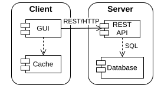
Chaque composant est représenté par un rectangle avec 2 petits onglets sur le côté gauche. Une représentation alternative est toutefois utilisée lorsqu'un composant en contient d'autres (cf figure à gauche).
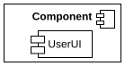
Les liens entre les composants peuvent être représentés par une flèche :
- pleine : pour les communications/interactions entre composants.
- en pointillée : pour une dépendance, traduisant une relation plus forte.
Vous pouvez spécifier les protocoles de communications sur les flèches.
Il est aussi possible de préciser les caractéristiques des matériels (e.g. mémoire, processeur, etc.).
Les interfaces
Les composants interagissent entre eux par l'échange de messages, qui peuvent être implémentés sous la forme d'appels de fonctions, d'événements, de requêtes REST, etc. Lors de la conception, ils sont usuellement représentés sous la forme d'un appel de fonction, sans en préjuger la nature.
Afin que les composants puissent se comprendre, il convient d'en spécifier les différents messages. Une interface est alors un contrat décrivant les messages qu'un composant s'engage à accepter. Le respect de ce contrat permet le développement parallèle des composants via différentes équipes de développement, tout en limitant les conflits lors de l'intégration. L'interface sert de double frontière entre l'implémentation du composant, et son utilisation.
Abstraction
Le composant est vu comme une boîte noire exposant une (ou plusieurs) interface, communiquant l'intention sans révéler l'implémentation interne (abstraction). L'interface ne dévoile que le minimum d'informations nécessaires (principe de moindre connaissance), sans nécessiter la connaissance de ce qu'elle fait en interne (ni de comment elle le fait) pour pouvoir être utilisée.
Cela n'est pas entièrement vrai. Sans avoir besoin de comprendre les détails techniques, il est tout de même nécessaire de connaître, dans les grandes lignes, le comportement interne de certains composants (e.g. SQL ou Git) afin de comprendre ce qu'on fait, et ainsi de les utiliser correctement.
L'interface étant indépendante de l'implémentation, toute modification de son implémentation n'est ainsi pas censé l'impacter.
Agnostisme
De même, l'interface doit fournir des services en étant agnostique des usages qui en sont faits. Par exemple, un composant dont la responsabilité est de stocker des produits, n'est pas censé savoir comment afficher un produit, ou de connaître les différents types de produits qui nous intéressent :
En effet, l'affichage d'une liste de produits peut varier (e.g. liste compacte, fiches détaillées, etc.). Or la modification de la manière d'afficher un produit n'est pas censé impacter son stockage. On ne veut pas que chaque changement d'usage nécessite une modification du composant de stockage, au risque de casser d'autres usages.
Il est cependant possible de fournir, en dehors du store, des helpers permettant de factoriser et d'expliciter le code.
Le store peut aussi accepter des paramètres génériques lorsque cela se justifie :
Attention cependant à ne pas anticiper des besoins futurs qui ne se manifesteront peut-être pas, ou qui finalement trouveront une meilleure alternative lorsque le projet sera plus avancé. Ajouter de la généricité ne doit se faire que s'il y a un besoin actuel concret.
L'interface étant indépendante de son usage, toute modification dans ses utilisations n'est ainsi pas censé impacter l'interface.
Stabilité
Les composants dépendent ainsi d'interfaces qui limitent la portée des modifications en permettant aux implémentations et usages d'évoluer indépendamment. L'interface doit être elle-même stable, en effet toute modification de l'interface nécessitera d'adapter en conséquence les implémentations et usages.
Il est ainsi tout à fait possible d'isoler une implémentation "sale" et instable derrière une interface propre et stable. L'effet "boîte noire", empêchera la "saleté" de se propager et de contaminer le reste du projet.
En revanche, un composant stable (ou difficile à modifier) ne doit pas dépendre d'une interface instable. En effet, une interface instable sera amenée à varier, nécessitant ensuite de modifier le composant en conséquence.
Diagramme de composants (UML)
Le diagramme de composants représente les composants avec les interfaces qu'elles fournissent ou dont elles ont besoin :
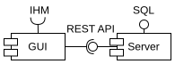
Les interfaces sont représentées par une ligne avec un :
- cercle : interface fournie par le composant.
- demi-cercle : interface requise par le composant.
L'association des deux traduit une interaction entre composants, via l'interface.
L'interface peut aussi être représentée par un rectangle subdivisé en 3 compartiments, permettant de décrire l'interface :
- nom
- attributs
- méthodes
On dit alors que le composant implémente l'interface, qu'on représente par le biais d'une flèche de réalisation (trait pointillé, tête triangle blanc).
La notation exacte sera vue au CM3 avec le diagramme de classes.
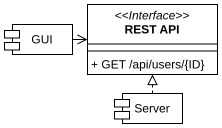
Bien que ce ne soit pas standard, il est tout à fait possible de fusionner le diagramme de composants avec le diagramme de déploiement.
Découper le projet en composants
On souhaite découper le projet en composants qui soient le plus indépendants possibles, i.e. qui aient un faible couplage. C'est à dire qu'un composant doit pouvoir évoluer sans impacter les autres composants. On va ainsi tenter de regrouper "ce qui évolue ensemble" au sein d'un même composant.
En couches d'abstraction
Les couches d'abstraction sont une application du principe d'abstraction à l'échelle des composants. Les couches les plus basses (de bas niveau) sont les couches les plus techniques, quand les couches les plus hautes (de haut niveau) sont les plus abstraites.
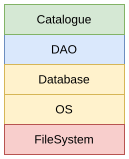
Les DAO (Data Access Object) abstraient l'accès à des données persistantes, indépendamment de leur support de stockage (e.g. fichiers, base SQL, etc.). On manipule alors les données par le biais de classes qui se chargent d'effectuer les opérations demandées.
Il convient de ne pas mélanger les différents niveaux d'abstraction. Chaque couche N ne doit déprendre que de la couche N-1.
Le découpage en couches évite de s'enfermer dans une solution ou un choix technique. Par exemple, si on change la structure de la base de donnée, les adaptations à effectuer seront localisées et restreintes à la couche DAO. Ainsi, les autres couches ne seront pas impactées, et le code à modifier sera aisément identifié, réduisant significativement le coût des modifications.
Les couches les plus hautes communiquent l'intention. Elles peuvent être rédigées en réutilisant la logique et le langage métier, permettant potentiellement au client d'en comprendre le code et d'en modifier certains éléments à la marge.
Par responsabilités
Il est aussi d'attribuer à chaque composant ses propres responsabilités. C'est par exemple le cas dans l'architecture 3-tiers :
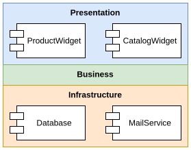
La couche présentation défini l'interface utilisateur. Son rôle est d'afficher les données, ainsi que de convertir les événements bruts (e.g. clavier, souris) en intentions (e.g. supprimer un produit) qu'elle transmet à la couche inférieure.
La couche métier (business) modélise les données et processus métiers. Elle ne connaît pas la couche présentation, en revanche, elle émet des notifications que la couche présentation peut écouter afin de se mettre à jour.
La couche infrastructure abstrait les différents supports de stockages et moyens de communication. Ainsi la couche métier accéder aux services de l'infrastructure sans dépendre de leur nature (e.g. BDD SQL vs fichiers JSON, etc).
Chacune de ces couches peut évoluer sans impacter les autres couches. La couche métier doit même pouvoir être exécutée et instrumentée sans la couche de présentation. Ainsi, en cas d'indisponibilité de la couche de présentation (e.g. bug au cours d'une refonte), le système reste fonctionnel et disponible, (e.g. via des scripts ad hoc, lignes de commande, requêtes REST, etc). La couche métier peut alors être testée de manière isolée, en retirant la couche présentation, et remplaçant l'infrastructure par des modules simulés ou maîtrisés (e.g. avec des données de tests).
Plusieurs couches de présentation peuvent coexister. Par exemple, chaque acteur peut avoir sa propre application/interface, toutes reliées à la même couche métier.
Par fonctionnalités
Il est aussi possible de découper le projet en modules fournissant chacune un service, e.g. gestion utilisateurs, gestion produits, planificateur, etc. Il est ainsi aisé d'ajouter/retirer des fonctionnalités au projet, en ajoutant/retirant des modules.
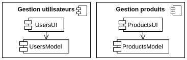
Certains modules peuvent dépendre d'un autre, bien qu'on cherche à les rendre le plus indépendant possible.
Attention à bien éviter les dépendances circulaires entre modules/composants.
Combiner les découpages
Bien évidemment ces différentes manières de découper un projet ne sont pas mutuellement exclusives. Il est ainsi possible d'avoir une architecture 3-tiers où les couches présentation et métier sont réparties dans différents modules, avec des bibliothèques partagées fournissant des couches d'abstractions pour des besoins partagés entre les différents modules (e.g. l'accès à la couche infrastructure).
Ces modules peuvent être implémentés sous la forme d'un dossier (package) dont le contenu pourra être déployé indépendamment des autres modules.
deploy
Protocoles de communication
Les interfaces décrivent ce que les composants sont capables de faire, mais pas la manière dont ils échangent entre eux dans le cadre d'un scénario donné. Par exemple, pour acheter un produit, quels messages sont envoyés à qui, et dans quel ordre ?
Les messages
Stateless + DP orchestrator
Éviter boucles (e.g. DOM .remove()) -> décider d'un responsable + séparer la demande du traitement.
- ask : request/x
- do : execute/perform
- process
- event/hooks : on/before/after
- update method (?) + request update (idem do et on - éviter loop).
=> éviter loops
=> parfois 2 interfaces identiques, mais niveau abs. différentes.
Pour éviter certains problèmes (e.g. boucles infinies), on va souvent distinguer l'enclenchement de l'action et son traitement :
- : j'enclenche l'action.
- : je traites/réagis à l'action.
Les appels de fonctions peuvent être
synchrone (
j'attends la réponse) ou
asynchrone (
je continue l'exécution sans attendre la réponse). Les appels asynchrones peuvent être implémentés par :
- un callback : fonction passée en paramètre et appelée lorsque l'action est finie (e.g. ).
- une fonction asynchrone : dépend du langage de programmation utilisé (e.g. ).
Nommage
MSG ?
Les noms doivent révéler l'intention et être explicites, sans pour autant être trop longs. Certains termes proches se distinguent par des nuances implicites, qui sont cruciales à la bonne comprehension intuitive des concepts sous-jacent, e.g.:
- changed: a été modifié.
- stale: n'est plus à jour.
- invalidated: invalidée.
- expired: a expiré.
Il est aussi important d'uniformiser les noms en adoptant des conventions et en s'y tenant. Par exemple, pour ajouter des éléments à une collection, il est possible d'utiliser plusieurs termes. Il convient ainsi d'en sélectionner un, et de l'utiliser pour l'ensemble de nos collections :
Il est aussi possible de définir des redirections, e.g. :
- prepend/append: ajout en début/fin de collection.
- insert: ajout à une place précise dans la collection.
- add: ajout par défaut, commune à toutes les collections, redirige vers les méthodes précédentes.
Les conventions peuvent aussi introduire de nouvelles nuances qu'il conviendra d'expliciter, e.g. :
- listen : écouter.
- once : n'écouter que le premier événement.
- on : observation d'événements riches.
- when : once + promesse.
- observe : listen + appel initial.
- monitor : listen + collecte des événements.
- watch : listen + vérification des valeurs.
- bind : déclaration d'un watch auprès d'un système.
Diagramme de Communication
Le diagramme de communication représente les communications entre objets dans le cadre d'un
scénario donné :

Chaque composant est représenté par un carré incluant son nom et/ou son type sous la forme . Les composants communiquant entre eux sont reliés par une ligne droite.
Les messages échangés sont représentés par une flèche le long de cette ligne. Les messages doivent être numérotés.
Ce diagramme est peu approprié lorsque le scénario est complexe ou contient de nombreux échanges entre deux mêmes composants.
Diagramme de séquence
Le diagramme de séquence permet de représenter des scénario plus complexes. Il offre une représentation chronologique des interactions, tout en étant plus expressif. Il est très utilisé pour décrire des protocoles réseaux.

Un objet est décrit par un rectangle, comme dans le diagramme de communication. Sa ligne de vie est représentée par un trait vertical en pointillé, et ses périodes d'activités par un rectangle blanc sur cette même ligne.
Les messages sont représentés par des flèches.
Le diagramme de séquence distingue 3 types de messages :
- synchrone : pointe en triangle noir.
- asynchrone : pointe en trait.
- réponse : trait en pointillé, pointe en trait.
Un objet peut s'envoyer un message à lui-même.
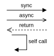
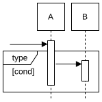
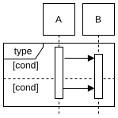
Le diagramme de séquence utilise des cadres pour représenter des comportements particuliers (e.g. structures de contrôle, parallélisme).
Le cadre peut lui-même être subdivisé en plusieurs parties, séparées par un trait en pointillé. Le type de comportement est indiqué en haut à gauche. Une condition peut être précisée entre crochets, en haut à gauche, éventuellement en dessous du type.
Par exemple le cadre (reference) permet de représenter un ensemble d'interactions défini dans dans un autre diagramme de séquence, vers lequel il renvoie.
Le cadre est alors vide, ne contenant que le nom du diagramme de séquence auquel se référer.
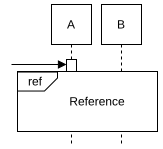
Le diagramme de séquence permet aussi d'utiliser d'autres types de cadres :
- : condition (optional)
- : boucle
- : parallel
- : interdit (negative)
- : équiv. à if/elif/else
- : quitte le cadre
- : atomique (critical)
- : obligatoire
Le diagramme de séquence permet aussi de représenter :
- des messages trouvés ou perdus :
- des informations temporelles :
- la création/destruction d'objets :
Autres diagrammes
Diagramme Global d'Interaction
Le diagramme Global d'Interaction est un diagramme d'activité où chaque noeud est un diagramme d'interaction (usuellement diagramme de séquence). Il est peu utilisé en pratique.
Diagramme de temps
Le diagramme de temps décrit l'évolution de l'état de plusieurs objets au cours du temps. Un objet est représenté sous la forme d'un couloir horizontal, et une ligne décrivant l'évolution de son état. Le temps est représenté sur l'axe des abscisses, et les états sur l'axe des ordonnés.
Hors contextes spécifiques, il est peu utilisé en pratique. On peut le voir comme un diagramme de séquence horizontal où l'échelle de temps est explicite, et les changements d'états mis en évidence.
Communication entre composants
La nature des messages
Architecture monolithique
Dans une architecture monolithique les composants sont regroupés au sein d'un même exécutable. Les messages sont usuellement implémentés sous la forme d'appels de fonctions.
Service Oriented Architecture (SOA)
Dans une architecture SOA, les services (composants) sont distribués au sein de différents exécutables/processus. Il est alors nécessaire d'utiliser des techniques de
communications inter-processus (IPC) :
- fichiers FIFO : pipes, sockets.
- événements : message queue, signaux unix.
- données : sémaphores, mémoire partagée.
Seuls les messages binaires/textuels (e.g. JSON) peuvent être transmis. Pour transmettre un objet, il faudra ainsi :
- le sérialiser, i.e. le transformer en données binaires.
- puis le désérialiser à la réception, i.e. le récréer à partir des données binaires.
Micro-services
Dans une architecture de micro-services, chaque service a son propre exécutable/processus. Son principal intérêt réside dans leur déploiement indépendant, et leur réplication sur plusieurs serveurs en fonction de la charge. Cette architecture est ainsi utilisée lorsqu'on traite un volume très massif de requêtes et de données.
Les services pouvant se trouver sur différents serveurs, les sockets sont alors utilisées avec un protocole réseau adapté aux besoins du système. Par défaut, on utilisera généralement une API REST.
Envoyer une requête réseau est bien plus coûteux qu'un simple appel de fonction. Le découpage en services doit ainsi éviter des communications excessives, en regroupant ensemble les composants qui communiquent fréquemment entre eux.
Identifier le destinataire
Pour pouvoir envoyer un message, le composant expéditeur doit pouvoir joindre le composant destinataire, i.e. qu'il ai une référence vers le composant ciblé.
Glue code
Le plus simple est d'utiliser un glue code qui va initialiser les différents composants en leur transmettant les dépendances dont ils ont besoin (dependencies injection):
Module
Lorsque plusieurs interfaces "vont ensemble", on peut souhaiter les regrouper au sein d'une même interface/objet (un
module), afin de s'assurer d'utiliser la même implémentation. Cela permet aussi de regrouper les dépendances au sein d'un même objet (
Dependency Bundle), évitant ainsi la multiplication des paramètres (
Parameter Object) :
Lorsque l'interface sert à créer différents types d'instances, on parle alors de DP Abstract Factory.
Service Locator
Une autre méthode, plus flexible, est d'utiliser un DP
Service Locator, afin d'enregistrer des
interfaces, puis de les récupérer en les initialisant sur demande. Cela permet de charger dynamiquement les composants tout en résolvant l'ordre des dépendances.
Il convient toutefois de continuer d'utiliser l'injection de dépendances afin de faciliter les tests, et d'éviter de coupler l'implémentation de l'interface avec le Service Locator. Le Service Locator intègre donc aussi du glue code.
Event Bus
Dans les systèmes réactifs, on peut utiliser un
Event Bus global, permettant de s'abonner à un événement, sans à en connaître l'origine. Bien évidemment cela ne fonctionne que pour des objets/événements "globaux" du système.
Acheminer le message
Idéalement, les composants sont indépendants du moyen de communication utilisé (e.g. appel de fonction, requête REST, requête SQL, etc). Pour cela on peut utiliser un
broker qui reçoit les requêtes, puis les transmet. Il abstrait ainsi la communication entre les composants :
Le broker peut alors fournir diverses fonctionnalités additionnelles, e.g. :
- queue : gestion de fils d'attentes de messages à traiter.
- load balancing : répartition des messages vers différents clones du même composant.
- Data Transfert Object : agrégations de messages lors de l'envoi sur le réseau.
Bien évidemment, il est possible d'implémenter des couches d'abstractions par-dessus le broker, e.g. :
Proxy
On peut même fournir un
proxy, i.e. une interface qui se fait passer pour le composant, et qui transmet les requêtes tout en fournissant divers services (ici communication à travers le broker) :
Diag de communication.
Si on se contente simplement d'appeler les fonctions du destinataire, un proxy + broker est complètement inutile, et complexifie le code pour rien. Dans ce cas, autant utiliser directement l'interface du destinataire, qu'on pourra ensuite remplacer par un proxy + broker le jour où le besoin se manifestera réellement.
Interceptions de messages
Le broker et le proxy sont aussi régulièrement utilisés pour intercepter les messages afin de fournir diverses fonctionnalités :
- access control : rejeter la requête si l'expéditeur ne dispose pas des droits nécessaires.
- cache : conserver les résultats des requêtes précédentes.
- logs : enregistrer les requêtes (et éventuellement leurs réponses) pour faciliter les diagnostics futurs (e.g. debug).
- monitoring : e.g. suivre la charge du système, lancer des alertes, etc.
Les incompatibilités d'interfaces
Pour que des composants puissent échanger entre eux, ils doivent utiliser les mêmes interfaces. Cependant, le fait que les interfaces doivent être stables n'empêche pas des évolutions ponctuelles. Or, on souhaite éviter de casser l'ensemble du projet tant que les composants n'auront pas été adaptés à la nouvelle interface.
Pour cela on utilise le DP
Adapter, qui va servir de traducteur entre les deux versions de l'interface :
diag
"Gateway" locale
Une autre solution est d'anticiper en créant une interface "Gateway" locale, i.e. :
- regrouper les dépendances du composant derrière une interface unique (DP façade).
- découpler l'interface locale, des interfaces dont elle dépend (DP Bridge).
- éventuellement coordonner les appels aux différentes dépendances (DP mediator).
Figure
Ainsi, il est possible de simplifier l'implémentation du composant, tout en le rendant plus explicite. Le fait d'isoler les dépendances au même endroit permet à la fois d'identifier ce que le composant a réellement besoin, et de limiter les modifications en cas de modifications des dépendances.
KISS
Pour rappel, il convient d'adapter les outils aux besoins et contraintes du projet, en essayant de rester le plus simple possible. Il faut anticiper sans complexifier.
Par exemple, commencer par un système où les composants communiquent directement entre eux. Ce qui en facilite le développement et les tests. Plus tard, on pourra ensuite implémenter le réseau, en isolant cette complexité (e.g. via un proxy + broker).
Cette séparation devra tout de même être anticipée en s'assurant que ces composants restent faiblement couplés entre eux afin de pouvoir les déployer séparément. Retarder la séparation permettra également d'en différer le découpage réseau, et ainsi l'effectuer sur la base de métriques concrètes.
Idéalement, on pourra activer et désactiver les fonctionnalités réseaux afin de faciliter le développement et les tests. En effet, il est plus simple d'exécuter et de tester en local, que de devoir déployer sur un cluster de serveurs à chaque modification. De même, il est plus simple d'analyser des logs de messages en clair que chiffrés.